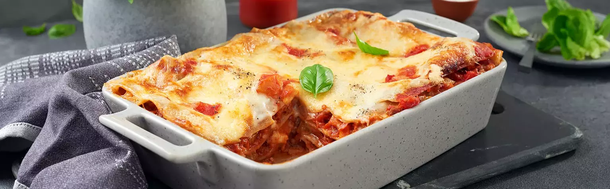

Lasagna

Description
This Lasagna is great for a nice evening dinner. It is for five people.
Ingredients
- Pasta plates
- Dried tomatos
- Cheese
- Cream
- Meat
Steps
- Put the pasta plates inside a baking tin
- Cook the meat
- Put the cooked meat on the pasta plates
- Put the dried tomatos on the meat
- Start again with the pasta plates and finish with ne dried tomatos
- Put on some cheese
- Leave it in the oven on 200 Degrees for 45 minutes